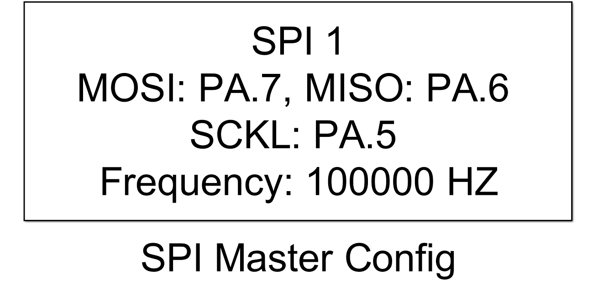
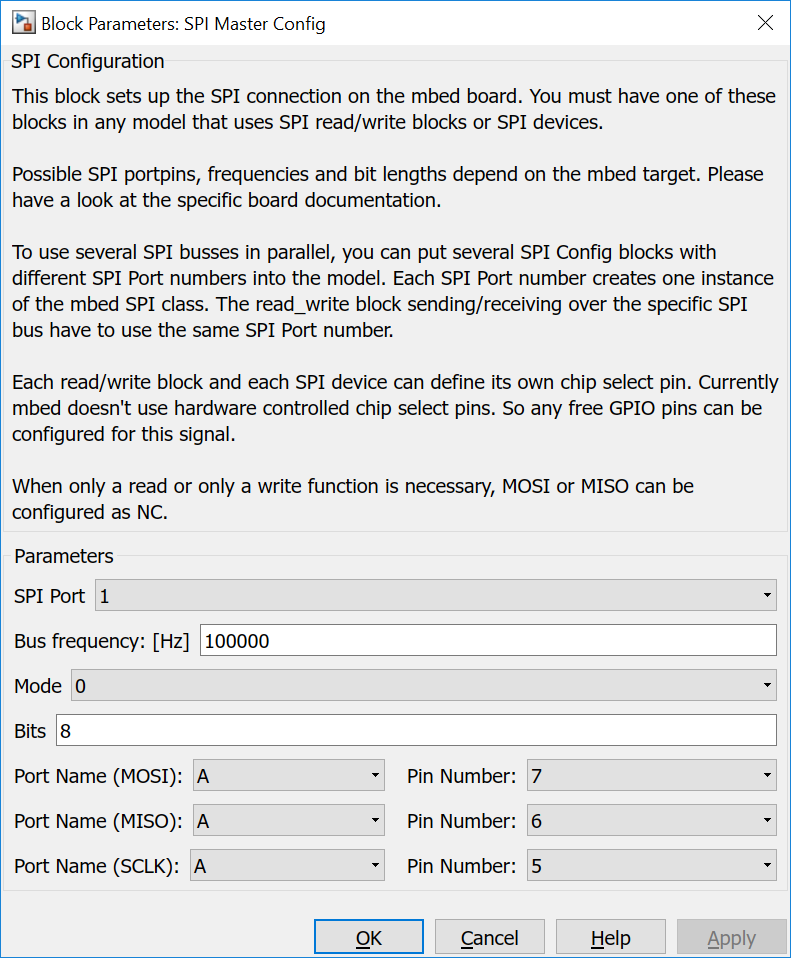
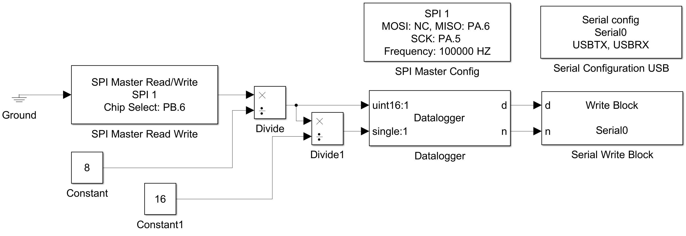

5.4.1. SPI Master Configuration
5.4.1.1. Description
This block sets up a SPI connection on the mbed board. You must have one of these blocks in any model that uses SPI read/write blocks or SPI devices.
{kind=link}
Possible SPI portpins, frequencies and bit lengths depend on the mbed target. Please have a look at the specific board documentation.
To use several SPI busses in parallel, you can put several SPI Config blocks with different SPI Port numbers into the model. Each SPI Port number creates one instance of the mbed SPI class. The read_write block sending/receiving over the specific SPI bus have to use the same SPI Port number.
Each read/write block and each SPI device can define its own chip select pin. Currently mbed doesn’t use hardware controlled chip select pins. So any free GPIO pins can be configured for this signal.
When only a read or only a write function is necessary, MOSI or MISO can be configured as NC.
Internally the mbed SPI class is used to set up the SPI peripheral.
Attention
If pins are configured which cannot be mapped to the same SPI peripheral NO error will show up at compile time, but the SPI bus won’t work.
5.4.1.2. Parameters and Dialog Box
SPI Port
Specifies an internal SPI port number. It is used to generate unique instance names when more SPI busses are included in the same model and to tie config, read_write and device blocks together.
Bus frequency
Sets the clock frequency of the SPI bus.
Mode
Sets the SPI mode.
| mode | POL | PHA |
|---|---|---|
| 0 | 0 | 0 |
| 1 | 0 | 1 |
| 2 | 1 | 0 |
| 3 | 1 | 1 |
Bits
Sets the word length of each SPI transfer.
MOSI Port and Pin
Selects the Master In Slave Out pin of the SPI peripheral. For a read only functionality configured this pin to NC.
MISO Port and Pin
Selects the Master Out Slave In pin of the SPI peripheral. For a write only functionality configured this pin to NC.
SCKL Port and Pin
Selects the Serial Clock pin of the SPI peripheral.
Note
Please have a look at the specific board documentation for possible values. With wrong values the SPI bus may not work. No warnings are generated during compile time.
5.4.1.3. Example
In the example data read from a TMP123 temperatur sensor is bit shifted by 3. Additionally the value is devided by 16.0. Please Both values, the raw temperature and the temperature in °C is written to the serial port.
Please hae a look at thte datasheet of TMP123 for the explanation of bit shifting and dividing.
{kind=link}
5.4.1.4. Code Generation
Instance names of mbed SPI classes are created by concatenating spi and <SPI Port>.
Global parts
creates a global instance
SPI spi<SPI Port>(P<Port Name MOSI>_<Pin Number MOSI>, P<Port Name MISO>_<Pin Number MISO>, P<Port Name SCK>_<Pin Number SCK>);
Initialization Function
and two lines in void <Model Name>_initialize(void) function
spi<SPI Port>.format(<Mode>, <Bits>);
spi<SPI Port>.frequency(<Bus frequency>);
in <Model Name>.cpp.